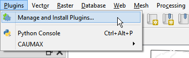
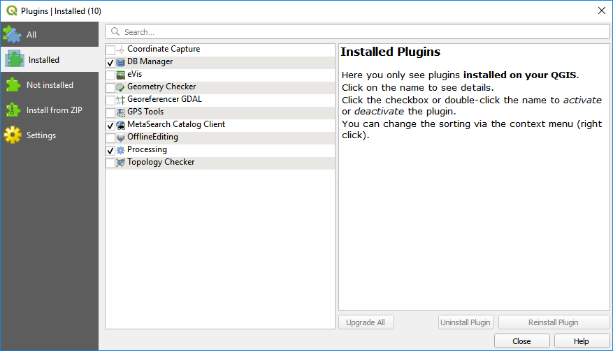
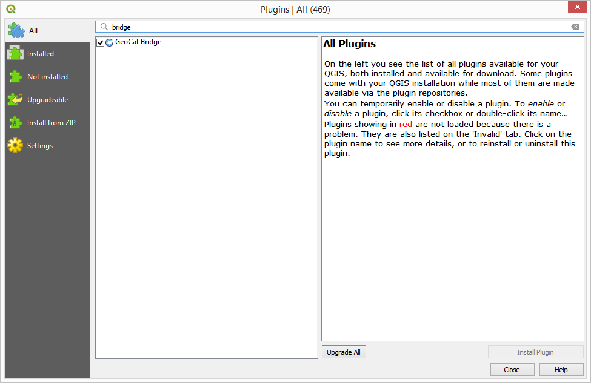
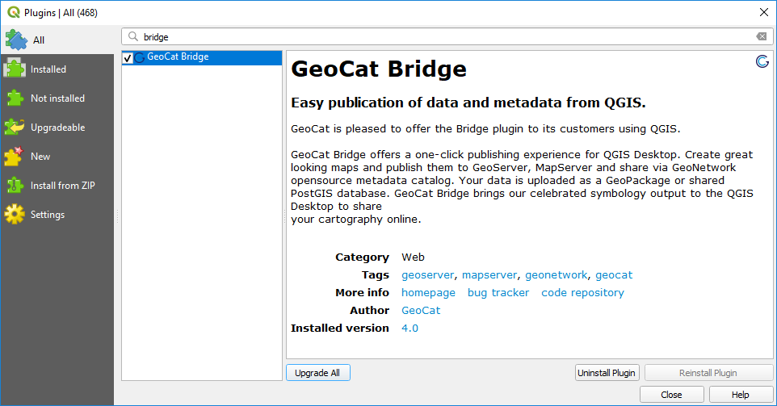
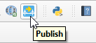

Installation¶
Requirements¶
Client-side¶
GeoCat Bridge requires QGIS 3.10 or newer. Both the standalone QGIS installation or the OSGeo distribution should work.
Note
If you access the internet through a proxy server, you might experience some issues while publishing data or connecting to a server.
Server-side¶
GeoNetwork¶
GeoCat Bridge currently supports GeoNetwork 3 starting at version 3.4 and higher. GeoNetwork 2 support has been deprecated and version 4 is not supported yet.
GeoServer¶
Support starts at GeoServer version 2.13 and up. However, other versions since 2.4 are expected to run fine in most of the cases.
If you wish to use a direct connection to PostGIS (i.e. let Bridge handle the data upload instead of the GeoServer REST API), you will need to have access to that database instance.
If you wish to let GeoServer import your data into PostGIS (i.e. through the REST API), you need to make sure that the Importer extension is available on GeoServer.
MapServer¶
MapServer support starts at version 6.2 and up. However, other versions since 5.6 are expected to run fine in most of the cases.
FTP connection or file write access to MapServer project path.
How to install¶
To install the GeoCat Bridge for QGIS, please follow these steps:
Open the QGIS Plugin Manager. The Plugin Manager can be opened using the menu entry.
You will see the following dialog:
Select the all section to show all available plugins.

In the search box, type bridge to filter the list of available plugins.
Click on the GeoCat Bridge plugin entry to display the information about the plugin:
Click on Install to install the plugin.
6. Once the plugin is installed, close the Plugin Manager and you will find a new menu entry under the menu, which contains the menu items for the Bridge plugin.

You’ll also notice a new toolbar button, that will open the Bridge Publish dialog.
